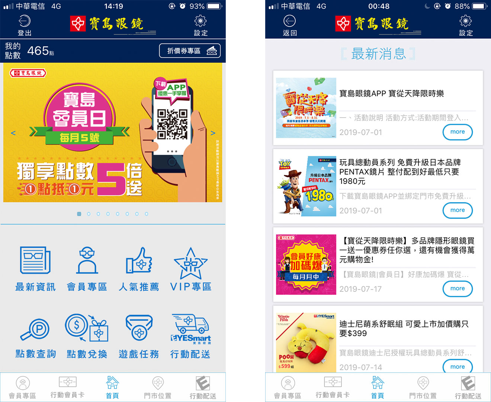
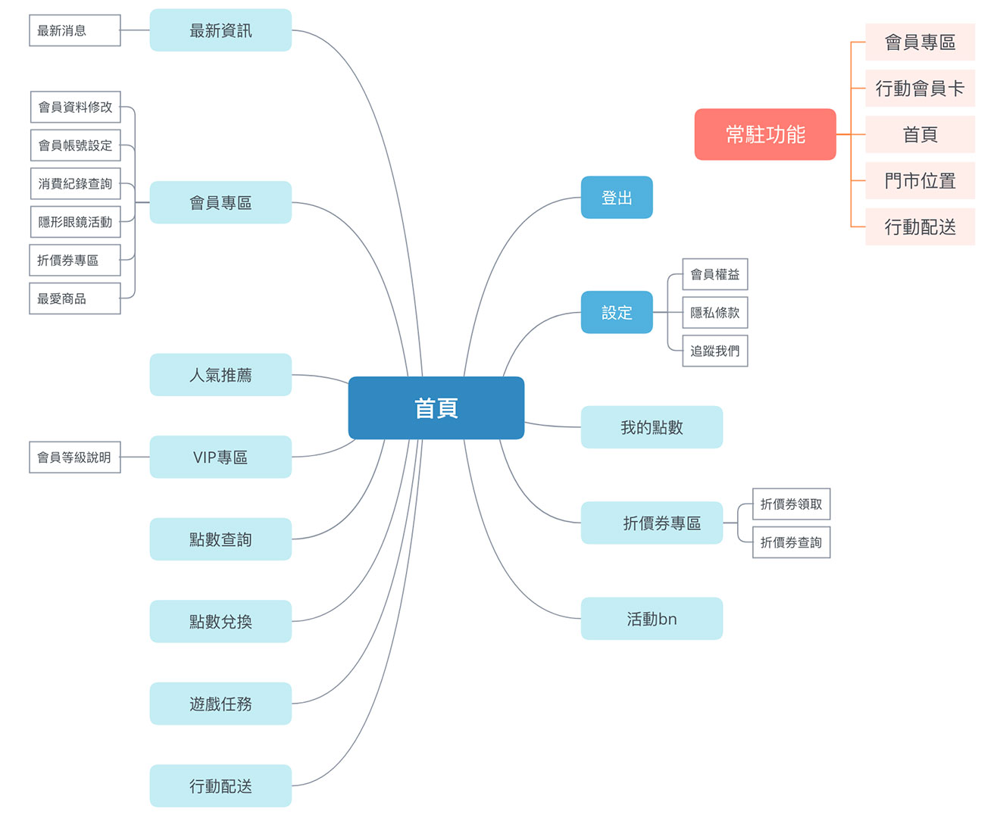
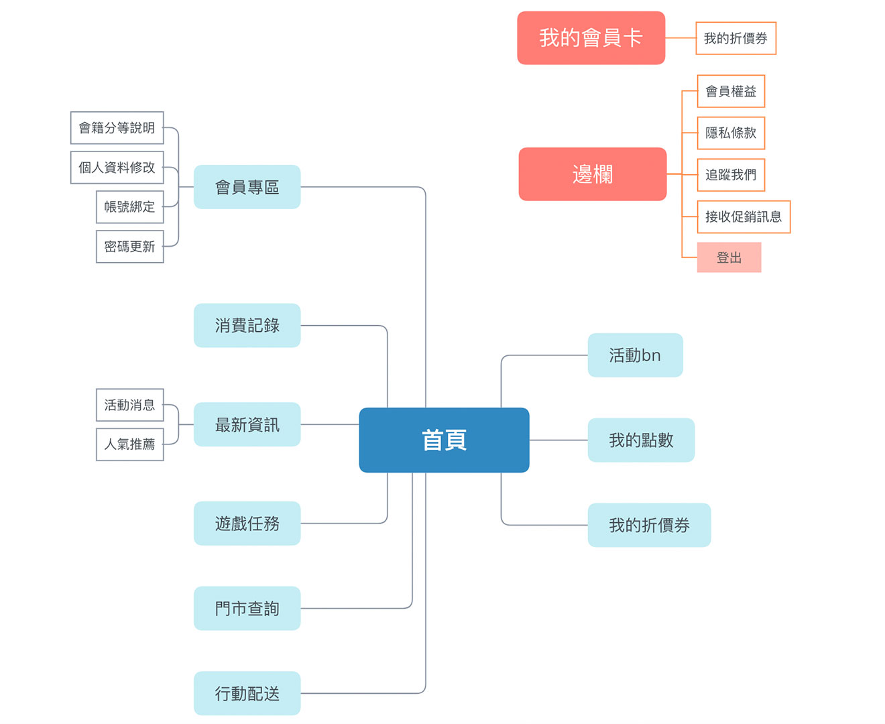
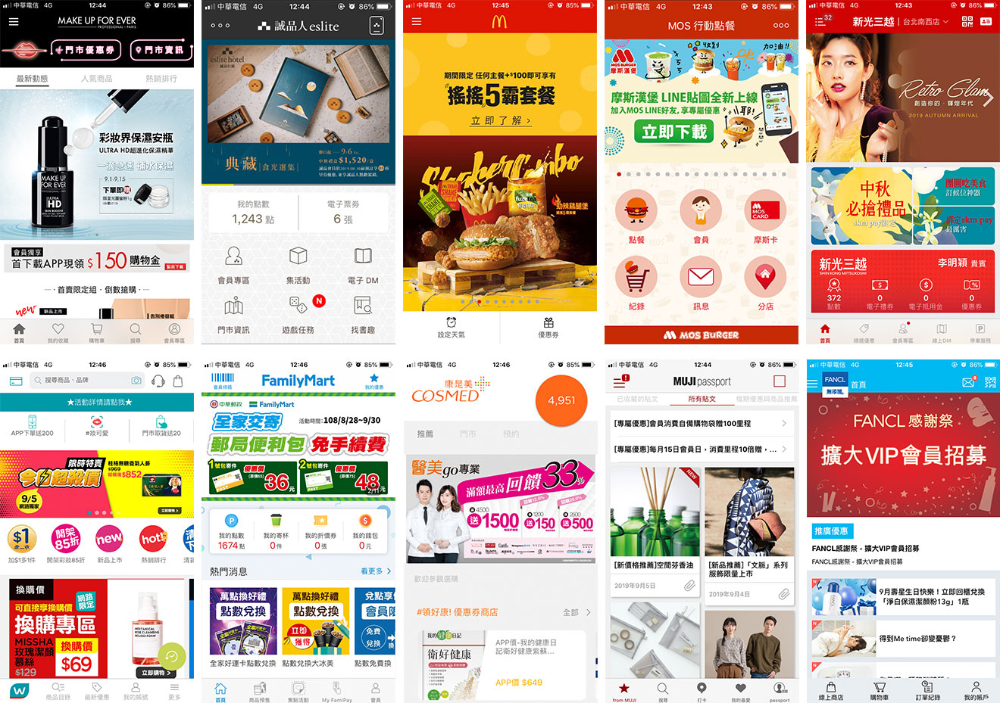
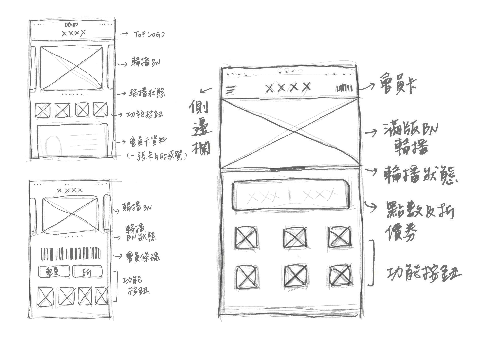
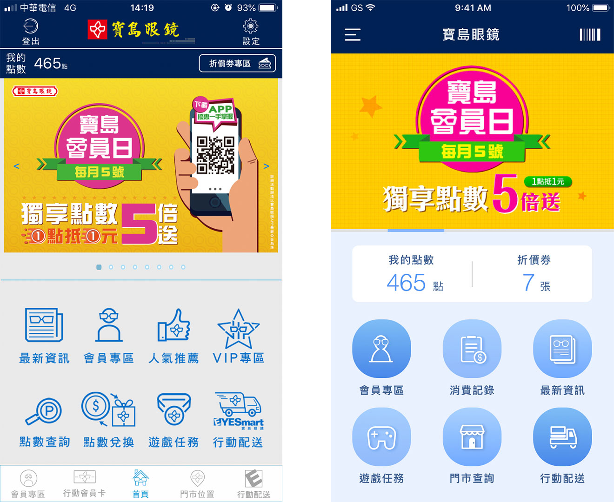
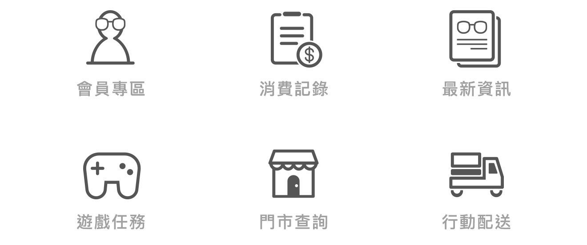
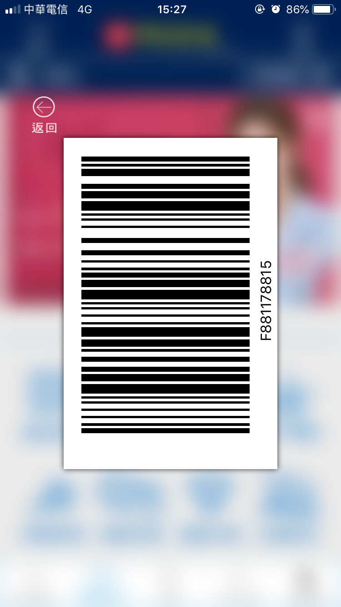
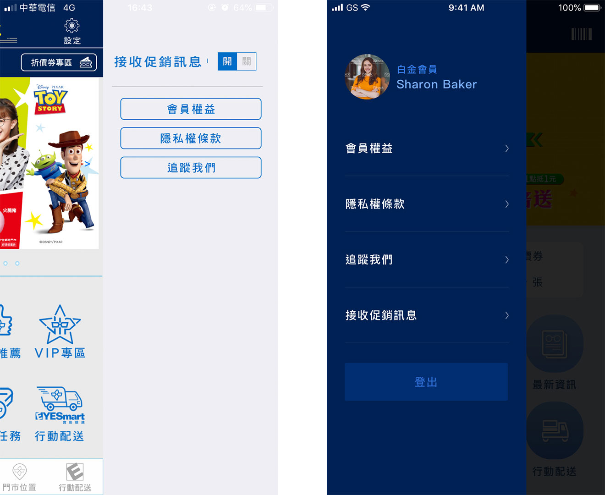
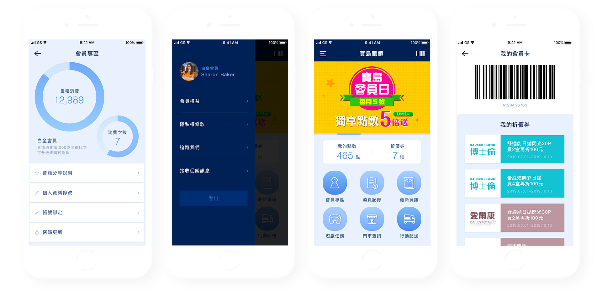

Story
偶爾有買隱形眼鏡需求的我，每次打開寶島眼鏡的app，總是要把一些按鈕點過幾回，才會找到自己想找的資訊。有時候想返回上一頁，不小心就會點到登出，讓我覺得很困擾，於是有了這次的app redesign。
先看看原本app的樣子：

1. 資訊凌亂
同一個頁面裡面出現兩個會員專區，兩個行動配送，另外還有VIP專區，導致使用者不知道該怎麼點選，例如我是會員也是VIP，那我是該點會員專區還是VIP專區？
2. 按鈕位置
登入/登出按鈕的位置跟返回的位置一樣，這樣容易誤點，而且按到登出時，沒有跳出警告或是提示詢問使用者是否確定要登出，就直接登出了。
資訊整理
app的首頁資訊實在太複雜，於是告訴自己，先寫下來吧！我把所有的功能都寫下來，再用Xmind整理成比較好理解的心智圖。

再將功能分類整理，刪掉首頁上重複的，或是相近的合併。例如：
1. 會員專區及VIP專區，同是會員，合併成會員專區。
2. 最新消息、人氣推薦及上方的BN，一樣是公司的促銷訊息。
3. 點數查詢、點數兌換跟我的點數，可以放一起。
4. 置底的常駐功能跟中間的按鈕重複，擇一保留。
諸如此類，最後整理成如下：

參考資料

搜尋一些品牌的app首頁，找出他們的共通點，並試著分析原因與優劣。以品牌的風格做為考量，歸納出合適的方向套用到寶島眼鏡的app，才著手介面設計。
草稿/線搞

線稿階段規劃了幾個介面，以簡約及易用為原則。畢竟是販售商品的品牌，適當的互動與促銷還是必要的，所以最後還是保留了BN輪播區塊。
而首頁上希望可以有會員卡、點數跟折價券的位置，因為以我自己為消費者來說，開啟app常常是為了刷會員條碼，並在結帳的時候使用折價券及點數，偶而才會查詢消費記錄，因此其他的功能對我來說，並不是特別重要。
最終在Ｍockup(視覺稿)階段，採用了圖上右邊的版本。考慮到寶島眼鏡BN的資訊比較多，滿版的區塊會比較適合，也避免過多的區塊分割，功能按鈕統一樣式。
首頁的調整
左 before / 右 after

寶島眼鏡app的功能其實不算太複雜，主要還是拿來查詢消費記錄、刷會員條碼、使用點數及折價券，因此我把這些部分保留在首頁，其中點數跟折價券顯示明確的數字，可以讓人一目瞭然，其他的排版跟原先沒有差太多，只是簡化了許多不必要的線條、框框，上方保留了寶島的深藍色，加強品牌識別度。logo的保留與否讓我比較掙扎，一般市面上的app還是會選擇放logo，畢竟是品牌很重要的象徵，但在這個Redesign，為讓畫面看起來簡約舒服，我選擇用文字替代。而上方的輪播BN，放大變成滿版，BN也調整成手機可視的文字大小，並簡化，只顯示重要資訊。

原本的icon其實很有品牌特色，我保留了部分的特徵，畫成較圓滑扁平的風格，讓整體看起來更清晰。
我的會員卡新舊比較
左 before / 右 after


會員卡以條碼的小icon顯示在首頁的右上角，會員條碼下結合折價券，方便在結帳的時候直接使用。
邊欄新舊比較
左 before / 右 after

原先在右上設定的邊欄，移到了左邊用漢堡選單呈現，並把原本在左上的登出按鈕，移進選單裡，因為登出對於這個app來說並不是會常使用的功能，藏在選單下可以減少誤點的機會，而選單點選的範圍變大，也大大提升易用度。滑出的選單顏色使用寶島的深藍色，首頁則變深，讓視線聚焦在選單上。
Prototype

寶島眼鏡首頁ReDesign
試著解決使用上感到不方便的地方，重新思考使用流程及功能，並賦予新的視覺、新的icon，讓整體符合眼鏡公司給人的舒服與清晰，使用上也更加順暢。
工具軟體
Photoshop： 照片編修、BN修改
Sketch： icon繪製、頁面設計、排版、配色
xmind: 資訊整理
██████████████████
